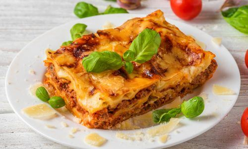

Lasagna Recipe
Ingredients
- 200gr pasta lasagna kering
- 150gr keju mozzarella, parut
- 1 sdm minyak
- 100gr wortel, potong dadu kecil
- 100gr jamur kancing, cincang kasar
- 300gr daging ayam giling
- 3 buah tomat
- 4sdm bawang bombay
Steps
- Siapkan semua bahan
- Didihkan air panas dan rebus lasagna instant selama 5-10 menit. Angkat lalu tiriskan
- Untuk saus bechamel didihkan butter kemudian masukan 3 SDM tepung terigu dan masak hingga matang
- Kemudian masukan susu cair uht, keju parut, dan bubu pelengkap seperti garam dan lada bubuk
- Susun mulai dari saus bechamel kulit Lasagna hingga 4-5 layer. Terakhri beri potongan keju mozzarella atau quick met dan taburi parley
- Panaskan oven selama 10 menit dengan api dibawah suhu 180 derajat celcius
- Panggang lasagna selama 30 menit
- Dan siap untuk di sajikan
